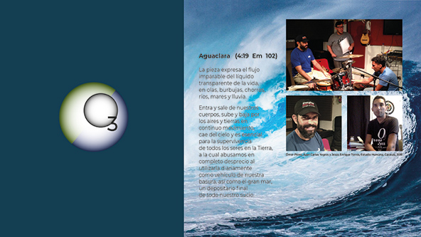

MEDIA:
MÚSICA
| VIDEOS | GALERIA | CONCIERTOS |
INFO: FUNCIÓN | INTEGRANTES | TARIFAS | DISTRIBUCIÓN | RIDER |
I N I C I O
INFO: FUNCIÓN | INTEGRANTES | TARIFAS | DISTRIBUCIÓN | RIDER |
{kind=link}
I N I C I O

AGUACLARA
(Emilio Mendoza)
Em 98 div. binaria
La pieza expresa el
flujo imparable del líquido transparente de la vida, en olas,
burbujas, chorros, ríos, mares y lluvia. Entra y sale de
nuestros cuerpos, sube y baja por los aires y tierras en
continuo movimiento, cae del cielo y es esencial para la
supervivencia de todos los seres en la Tierra, a la cual
abusamos en completo desprecio al utilizarla diariamente como
vehículo de nuestra basura, así como el gran mar, un
depositario final de todo nuestro sucio.
Partitura PDF
Música
• CD Guarapiche Blues (2020), Cuarteto (guit 6, guit. 12, bajo, maracas)
• En distrokid.com (Audio)
• En YouTube (Audio)
• CD Laberinto Dúo (2017), Dúo (guit 6, guit 12)
• En distrokid.com (Audio)
• En YouTube (Audio)
• CD Natura (2009, 12), Banda (guit 6, 12, 6, voz, sax, bajo, Cb, bat, tablã)
• En distrokid.com (Audio)
• En YouTube (Audio)
Video
"A Musical Afternoon in
Caracas" de Anjani Kumar, residencia de la Dra. Smita
Purushottam,
Honorable Embajadora, República de la India, Caracas, 16-06-2013.
Honorable Embajadora, República de la India, Caracas, 16-06-2013.
Si aprecia nuestra música y misión, puede ayudarnos a través de una donación.
BsS: Banco Mercantil, Cta Corriente: 01050024981024267520, Emilio Mendoza Guardia C.I. 3186000
US$ Zelle: emiliomen@gmail.com • Paypal: emiliomen2007@hotmail.com
Ozono Jazz está representado por Producciones
© 2022 Copyright por Emilio Mendoza. Todos los Derechos Reservados